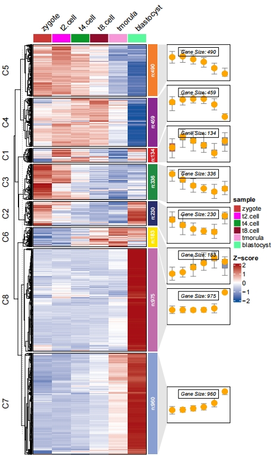

Chapter 2 Basic usage
Here we show a detailed documentation usage about ClusterGVis.
2.1 Input data
For bulk-RNA sequencing data, a normalized matrix or data frame(tpm/fpkm/rpkm/rpm/…) containing gene expressions can be accepted. Please make sure the rownames of expression matrix are gene names. Here we load an example data which is from Protein Expression Landscape of Mouse Embryos during Pre-implantation Development.
First we load the example data:
library(ClusterGVis)
# load data
data(exps)
# check
head(exps,3)
# zygote t2.cell t4.cell t8.cell tmorula blastocyst
# Oog4 1.3132282 1.237078 1.325978 1.262073 0.6549312 0.2067114
# Psmd9 1.0917337 1.315989 1.174417 1.064756 0.8685598 0.4845448
# Sephs2 0.9859232 1.201026 1.123076 1.084673 0.8878931 0.71740882.2 Clustering for expression matrix
It is a problem to define a suitable cluster numbers, here we supply the total within sum square value for different cluster numbers to help you to choose a suitable value. Besides you can re-define the cluster numbers after checking the expression distribution heatmap results:
The kmeans, mfuzz and TCseq methods can be choosen to cluster data. mfuzz and TCseq are suitable for time course sequencing data to detect genes with consensus trend which are both applied with fuzzy cmeans clustering methods. Users can choose which one you like.
# using mfuzz for clustering
cm <- clusterData(exp = exps,
cluster.method = "mfuzz",
cluster.num = 8)
# using TCseq for clustering
ct <- clusterData(exp = exps,
cluster.method = "TCseq",
cluster.num = 8)
# using kemans for clustering
ck <- clusterData(exp = exps,
cluster.method = "kmeans",
cluster.num = 8)The clusterData function returns a list of results containing detailed clustering information for each gene. The wide.res is a more easily interpretable data frame that includes scaled gene expression values and cluster assignments for each gene. Complementing this, the long.res is a long-format data frame derived from wide.res, offering an alternative view of the same information:
str(cm)
# List of 5
# $ wide.res:'data.frame': 3767 obs. of 9 variables:
# ..$ gene : chr [1:3767] "0610037L13Rik" "1110020G09Rik" "1110065P20Rik" "2010106G01Rik" ...
# ..$ zygote : num [1:3767] 0.255 -1.193 0.477 0.537 -1.395 ...
# ..$ t2.cell : num [1:3767] 0.608 0.347 0.121 0.15 0.387 ...
# ..$ t4.cell : num [1:3767] 0.708 0.113 -0.114 0.588 0.516 ...
# ..$ t8.cell : num [1:3767] 0.589 1.418 1.272 0.888 1.383 ...
# ..$ tmorula : num [1:3767] -0.2467 0.4319 0.0123 -0.3015 -0.8505 ...
# ..$ blastocyst: num [1:3767] -1.9124 -1.1167 -1.7682 -1.8611 -0.0408 ...
# ..$ cluster : num [1:3767] 1 1 1 1 1 1 1 1 1 1 ...
# ..$ membership: num [1:3767] 0.765 0.437 0.581 0.66 0.206 ...
# $ long.res:'data.frame': 22602 obs. of 6 variables:
# ..$ cluster : num [1:22602] 1 1 1 1 1 1 1 1 1 1 ...
# ..$ gene : chr [1:22602] "0610037L13Rik" "1110020G09Rik" "1110065P20Rik" "2010106G01Rik" ...
# ..$ membership : num [1:22602] 0.765 0.437 0.581 0.66 0.206 ...
# ..$ cell_type : Factor w/ 6 levels "zygote","t2.cell",..: 1 1 1 1 1 1 1 1 1 1 ...
# ..$ norm_value : num [1:22602] 0.255 -1.193 0.477 0.537 -1.395 ...
# ..$ cluster_name: Factor w/ 8 levels "cluster 1 (381)",..: 1 1 1 1 1 1 1 1 1 1 ...
# $ type : chr "mfuzz"
# $ geneMode: chr "none"
# $ geneType: chr "none"
str(ck)
# List of 5
# $ wide.res:'data.frame': 3767 obs. of 8 variables:
# ..$ zygote : num [1:3767] -1.189 -0.993 -1.095 -0.772 -0.683 ...
# ..$ t2.cell : num [1:3767] 1.177 0.936 1.027 1.075 1.11 ...
# ..$ t4.cell : num [1:3767] 0.126 0.561 0.484 0.397 0.337 ...
# ..$ t8.cell : num [1:3767] 0.1831 0.2203 0.0516 -0.1314 -0.0698 ...
# ..$ tmorula : num [1:3767] -1.17 -1.48 -1.33 -1.49 -1.56 ...
# ..$ blastocyst: num [1:3767] 0.878 0.758 0.861 0.923 0.865 ...
# ..$ gene : chr [1:3767] "Pdlim1" "Zp3" "Crk" "Ndufaf4" ...
# ..$ cluster : num [1:3767] 1 1 1 1 1 1 1 1 1 1 ...
# $ long.res:'data.frame': 22602 obs. of 5 variables:
# ..$ cluster : num [1:22602] 1 1 1 1 1 1 1 1 1 1 ...
# ..$ gene : chr [1:22602] "Pdlim1" "Zp3" "Crk" "Ndufaf4" ...
# ..$ cell_type : Factor w/ 6 levels "zygote","t2.cell",..: 1 1 1 1 1 1 1 1 1 1 ...
# ..$ norm_value : num [1:22602] -1.189 -0.993 -1.095 -0.772 -0.683 ...
# ..$ cluster_name: Factor w/ 8 levels "cluster 1 (134)",..: 1 1 1 1 1 1 1 1 1 1 ...
# $ type : chr "kmeans"
# $ geneMode: chr "none"
# $ geneType: chr "none"2.3 Line plot
visCluster accepts results from clusterData and do visualization with line plot:
Change linecolor:
Remove the middle line:
# remove meadian line
visCluster(object = cm,
plot.type = "line",
ms.col = c("green","orange","red"),
add.mline = FALSE)
There is no membership information if you choose kmeans method:
2.4 Heatmap plot
visCluster can create a comprehensive heatmap plot to show detailed cluster results. Here we make a heatmap plot:
Other paramters can be passed with ComplexHeatmap:
# supply other aruguments passed by Heatmap function
visCluster(object = ck,
plot.type = "heatmap",
column_names_rot = 45)
Change the annotaion bar colors on the right side:
# change anno bar color
visCluster(object = ck,
plot.type = "heatmap",
column_names_rot = 45,
ctAnno.col = ggsci::pal_npg()(8))
Mark your interested gene names in heatmap:
# add gene name
markGenes = rownames(exps)[sample(1:nrow(exps),30,replace = F)]
pdf('addgene.pdf',height = 10,width = 6,onefile = F)
visCluster(object = ck,
plot.type = "heatmap",
column_names_rot = 45,
markGenes = markGenes)
dev.off()
2.5 Sample group and order
Add groups for samples:
# assign groups
pdf('htcolg.pdf',height = 10,width = 6,onefile = F)
visCluster(object = cm,
plot.type = "heatmap",
column_names_rot = 45,
markGenes = markGenes,
show_row_dend = F,
sample.group = rep(c("group1","group2","group3"),each = 2))
dev.off()
Change sample orders:
# change sample order
pdf('htsr.pdf',height = 10,width = 6,onefile = F)
visCluster(object = cm,
plot.type = "heatmap",
column_names_rot = 45,
markGenes = markGenes,
show_row_dend = F,
sample.order = rev(colnames(exps)))
dev.off()
2.6 Multiple sample annotation
Multiple group annotations for samples can be passed with ComplexHeatmap grammers. Here we show an example:
# group info
mg1 = rep(c("D1","D2"), each = 3)
names(mg1) <- c("zygote","t2.cell","t4.cell","t8.cell","tmorula","blastocyst")
mg2 = rep(c("E1", "E2", "E3"), each = 2)
names(mg2) <- c("zygote","t2.cell","t4.cell","t8.cell","tmorula","blastocyst")
# TOP annotations
HeatmapAnnotation <- ComplexHeatmap::HeatmapAnnotation(mg1 = mg1,
mg2 = mg2,
col = list(mg1 = c("D1" = "#C147E9","D2" = "#FF7000"),
mg2 = c("E1" = "#54B435","E2" = "#31C6D4","E3" = "#D9CB50")),
gp = grid::gpar(col = "white"))
pdf('htcolmg.pdf',height = 10,width = 6,onefile = F)
visCluster(object = cm,
plot.type = "heatmap",
column_names_rot = 45,
markGenes = markGenes,
show_row_dend = F,
ht.col = list(col_range = c(-2, 0, 2),col_color = c("#A555EC","#EEEEEE","#FF597B")),
HeatmapAnnotation = HeatmapAnnotation)
dev.off()
Split the columns:
pdf('htcolmgs1.pdf',height = 10,width = 6,onefile = F)
visCluster(object = cm,
plot.type = "heatmap",
column_names_rot = 45,
markGenes = markGenes,
show_row_dend = F,
ht.col = list(col_range = c(-2, 0, 2),col_color = c("#A555EC","#EEEEEE","#FF597B")),
HeatmapAnnotation = HeatmapAnnotation,
column.split = rep(c(1,2,3),each = 2))
dev.off()
2.7 And line trend anntation
Add a line annotation for each sub-cluster to show expression tendency(Please note: use pdf function to save the plot and open it to view, otherwise the annotation panels will not match to the main heatmap if you use zoom option to view the plot in Rstudio):
# add line annotation
pdf('testHT.pdf',height = 10,width = 6)
visCluster(object = ck,
plot.type = "both",
column_names_rot = 45)
dev.off()
Add boxplot:
# add boxplot
pdf('testbx.pdf',height = 10,width = 6)
visCluster(object = ck,
plot.type = "both",
column_names_rot = 45,
add.box = T)
dev.off()
Remove line plot and change boxplot color:
# remove line and change box fill color
pdf('testbxcol.pdf',height = 10,width = 6)
visCluster(object = ck,
plot.type = "both",
column_names_rot = 45,
add.box = T,
add.line = F,
boxcol = ggsci::pal_npg()(8))
dev.off()
Add points:
# add point
pdf('testbxcolP.pdf',height = 10,width = 6)
visCluster(object = ck,
plot.type = "both",
column_names_rot = 45,
add.box = T,
add.line = F,
boxcol = ggsci::pal_npg()(8),
add.point = T)
dev.off()